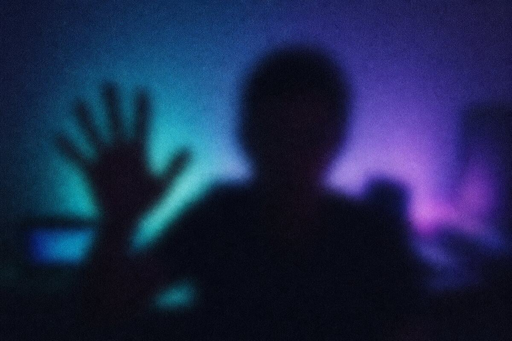

0M+
conversations started
Free forever · No download · 18+
Verified random chat · 12,483 online now
ShincChat drops you into a one‑on‑one chat with a real, verified person — text, voice or video. No feed. No followers. No algorithm deciding who you get to know. Just press Start.
Preview of the ShincChat interface: a one-to-one conversation with a matched stranger, which you can view as text chat or as a two-panel video call.
0M+
conversations started
0+
countries represented
0s
median time to a match
0/5
average chatter rating
Why ShincChat
Random chat broke because nobody was accountable. We rebuilt it around verification, consent and moderation that actually bites — then made it feel like the nicest chat app you've ever used.
Choose the shape of the meeting — recommended, random, nearby or a specific country — and pick text or video before you press start. Gender is declared once and locked, so both sides know exactly who they're talking to.
We'll pair you with people you're most likely to click with.
A short clip arrives blurred on the other side. Unblurring is a separate, consent-gated step — nothing is shown automatically, ever.

Hover to preview a revealStart in text, add live voice, switch to video — mid-conversation, with agreement from both sides.
Press and hold the mic to send a voice note. Some things land better said than typed.
Every conversation is stored against your account, not your browser. Reopen a chat and pick up mid-sentence — or see when they're back online.
Once seen, 24 hours, 7 days — or keep them. Delete a message for everyone, or clear a whole conversation.
Keep the people worth keeping. Send a request, see when they're online, and leave a review after a good conversation.
One tap, four fixed reasons, no essay required. By default a report bans the reported account immediately and permanently — they're disconnected on the spot and can't come back. Every report is kept for human review, and bad-faith bans can be reversed.
The product
Take the tour — every panel below is built the way the real app behaves.
Bordered bubbles, quoted replies, reactions, voice notes and a composer that stays out of the way. It should feel like the messenger you already love — with a stranger on the other end.
Equal, rounded panels — you and them, nobody bigger than anybody else. Chat text overlays cleanly, no bubbles cluttering the frame, and status toasts fade instead of stacking.
Live audio-only calls run alongside the text thread, so you can keep typing while you speak. Consent-gated both ways, and your partner is told if you switch to video mid-call.
Nothing unblurs until the person who recorded it agrees.
Verification is a two-step dance: send a short blurred clip, then reveal only with consent. It's a deterrent against catfishing, and it puts the person who recorded it in control of what happens next.
A Telegram-style side panel of every conversation you've had. Tap one and the messages come back — if that stranger is online right now, you're paired straight in and keep going live.
How it works
Three steps. No onboarding quiz, no 14 permissions, no credit card.
Username and password, or one tap with Google, Facebook or X. You declare your gender once — it stays locked, so matching means something.
Recommended, random, nearby or a country. Text or video. Change it whenever you like — it only applies to the next person you meet.
You're paired in seconds. Skip when it's not clicking, report in one tap if it's not okay, and keep the conversation if it is.
Start your first matchThe benefits
Every design decision here serves one outcome: two humans, one conversation, zero performance.
Meet someone nowUse a nickname, keep your face off, hide your profile. There's no follower count to protect and no clout to lose, so people say what they actually mean.
Browser-based with nothing to install — a five-year-old Android works as well as the newest phone. Matches are made in memory, so pairing is measured in seconds.
HTTPS everywhere, which your camera and mic require anyway. Video and voice run peer-to-peer over WebRTC instead of through a recording server. Nearby matching shows an area, never an address.
Reports trigger immediate permanent bans by default, and moderators review every single one — including reversing a ban when a report turns out to be bad faith.
Click? Add them as a friend, keep the history, get notified when they're back online. One great chat shouldn't vanish because someone pressed skip.
There's nothing to scroll when a chat ends — just another person. That's the point: you leave because the conversation finished, not because you got hijacked.
Trust & safety
Random chat has a reputation problem, and it deserves it. ShincChat was built backwards from the moderation layer — verification, consent and consequences come first, the fun comes second.
Accounts are gated by an age confirmation and a gender self-declaration that carries real consequences if it's wrong.
Verification clips arrive blurred. Revealing is a second, consent-gated action controlled by the person on camera.
Report, pick a reason, done. The default policy disconnects and permanently bans the reported account on the spot.
Moderators can read every stored report, reverse a bad-faith ban, or switch to manual review if a wave looks suspicious.
HTTPS across the site and WebRTC for video and voice, so media flows directly between the two of you.
Disappearing messages, delete-for-everyone, clear a conversation or all of them, and hide your profile from search.
Stories
A few of the conversations people keep telling us about.
I pressed start on a Sunday night purely out of boredom and ended up talking to someone in Seoul for three hours. We've done it every Sunday since. Neither of us expected that.
The blur-first verification sounds like a gimmick until you use it. It kills the weirdness before it starts and it means the person on the other side is a person.
I reported someone once, on a hunch, and they were gone before I'd put my phone down. That's the first time I've felt like a moderation button did something.
Voice notes changed everything for me. I'm not a typer and I'm not a camera person, but holding the mic and actually talking? That's how I made two real friends this year.
Moved cities, knew nobody, didn't want to doomscroll. Ten minutes a night on here beat every app on my phone for feeling less alone.
History following my login is the underrated feature. I found someone I'd clicked with two weeks earlier, they were online, and we just carried on mid-sentence.
As a woman on random chat sites, I usually last four minutes. Here I've never once had to argue with someone about a boundary — the consent steps do that for me.
I use it to practise English with actual humans instead of a textbook. Nearby is off, country filter on, and I've had better conversations than in two years of classes.
Pricing
Matching is never paywalled. Upgrades remove ads and add control — they don't put you ahead of anyone in the queue for meeting humans.
Everything you need to meet someone tonight.
$0/forever
For people who come back most nights.
$6/month
billed monthly · cancel anytime
Maximum control, best quality, gifting included.
$12/month
billed monthly · cancel anytime
Prices in USD. Cancel in one tap, keep your history. Coins are a virtual gift currency with no cash value. ShincChat is for adults 18 and over.
FAQ
Straight answers, no legal fog.
Yes. Unlimited matches, all three modes, blurred verification, reporting and 30 days of history cost nothing, forever. Plus and Pro remove ads and add comfort features like priority matching, country filters, HD media and gifting coins — they never gate your ability to meet people.
You need a free account — username and password, or one tap with Google, Facebook or X. Accounts are what make moderation real: a report, a ban or a friendship has to attach to something that persists. It also means your history follows you between devices.
Either person can send a roughly 2.5-second clip that arrives blurred on the other side, cropped identically for both of you. Revealing it is a separate step that only happens with consent from the person who recorded it. Clips stay in the chat log — they never appear over the video panels. It's a deterrent against misrepresentation, not a background check.
You choose the shape of the match: Recommended, Random, Nearby, or a specific country, plus text or video. Gender is declared once per account and locked, because honest matching is the whole premise. Country and nearby filters are a Plus feature; recommended and random matching are free for everyone.
One tap opens a report with four fixed reasons — misrepresented gender, inappropriate behaviour, fraud or scam, and other. Under the default policy, a submitted report bans the reported account immediately and permanently: they're disconnected on the spot and can't log back in. Moderators review every report and can reverse a ban if it turns out to be bad faith.
The site runs entirely over HTTPS, which cameras and microphones require anyway, and video and voice travel peer-to-peer over WebRTC rather than through a media server. Nearby matching only ever exposes an approximate area. You can use a nickname, hide your profile, turn on disappearing messages, delete a message for everyone, or wipe whole conversations.
It runs in any modern mobile browser — nothing to install, nothing to update. You'll be asked for camera and microphone permission the first time you use video or voice, and you can decline and stay in text mode with voice notes.
Yes — that's what history and friends are for. Open the Chats panel, tap a conversation and the messages come back. If they're online, you're paired straight in and continue live; if they're offline you can read what you had and pick it up when they return.
Adults, 18 and over, who want a real conversation with someone they've never met. If you're looking for a feed, an audience or a follower count, this isn't that — and honestly you'll be happier elsewhere.
12,483 people are online right now
Free forever, no download, matched in about four seconds. The worst case is a story; the best case is a person you'd never have met any other way.
Searching 12,483 people online for a good match.
Gender-matched18+ verifiedText mode
Verified · online now
24 · Lisbon, Portugal · matched in 3.8s
ok, be honest — what's the most useless thing you know?
This is an on-page preview — create your free account to talk to a real person.